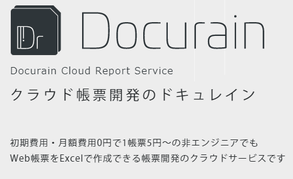
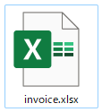
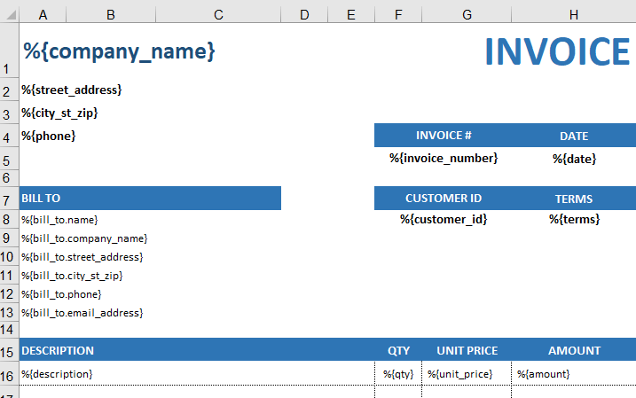
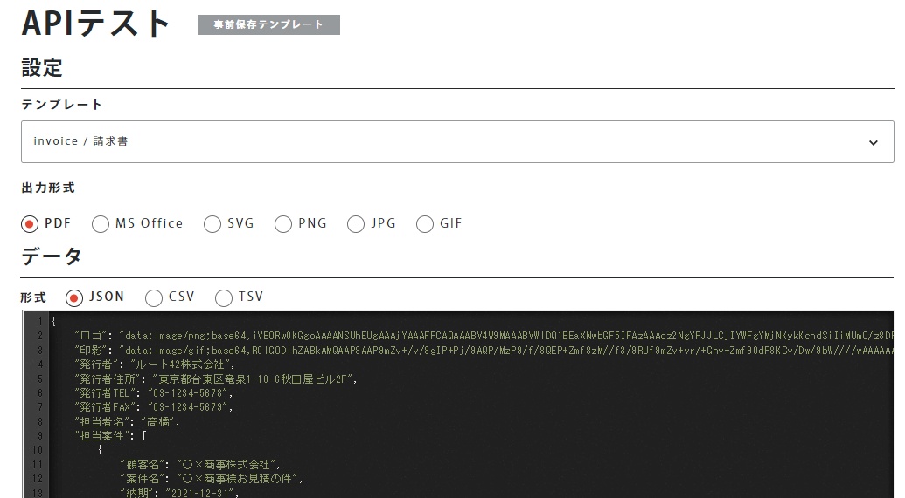

Amazing Documents Converter Application ‘Docurain’
kakisoft
about me
| name | Satoru Kakinohana |
| job | Software Engineers Specifically Logistics. PHP/JavaScript/AWS etc… |
| hobby | escape room |
| portfolio | kakisoft-portfolio |
| Twitte | kakisoft_tab |
cf. escape room is called "リアル脱出ゲーム" in Japan.
It's really exciting entertainment.
You use deductive skill and inspiration and team work, then solve challenging puzzles.
(Note)
I would like to introduce one impressive service in this slide.
It may seems like a sales presentation.
But, I just love this service. I’m not working for this company.
Have you, as engineers, ever had difficult time making some documents?
Today, I would introduce amazing documents converter application ‘Docurain’
Estimate, invoice and purchase order …
Some system is required to print these documents.
It is not easy to create these functions.
Every single document has totally different and unique format.
Also, we have to choose an appropriate library among many others.
We face many challenges to make some documents download functions.
But, there is a simple solution.
It is “Docurain”.
If you use this service, you can be liberated from the annoying document creation tasks.
There are only 2 steps to create a function for document creation using Docurain.
Firstly, create the document template.
It is incredibly simple.
Only tool that you need is Excel.

You have full control to create a complex template.
There is no need of complex operation.
Lastly, call the API.
Specify the template, and set the parameters you want to print, and call.
Of course, you can use with any computer languages.
There is no need to install some specific libraries.
And, there are no initial costs, monthly costs, or support costs.
It costs only 5 yen per document.
So, let me show you how to create documents using Docurain.
First, prepare your Excel template.

Like this, fill with specific code.
And, upload this file.

Next, call the API.
Choose the template, and set the parameter as json object.
Click execute button, document will be downloaded.

You can create such document.

Needless to say, you can call the API from source code.

As you can see, you can easily create document function.
Why don’t you make your work easy?
If you want to get more information, please visit official website.
We are looking forward to hearing from the companies that find document creation frustrating.
!!!Caution!!!
Let me repeat that, I’m not from Docurain company neither this slide is production advertizement.
It is truly truly for this event for IT engineers.
fin.